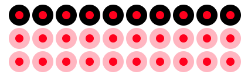
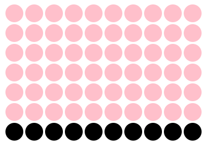
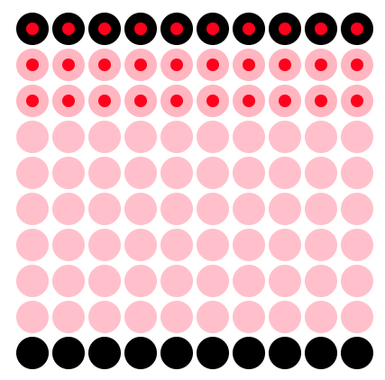
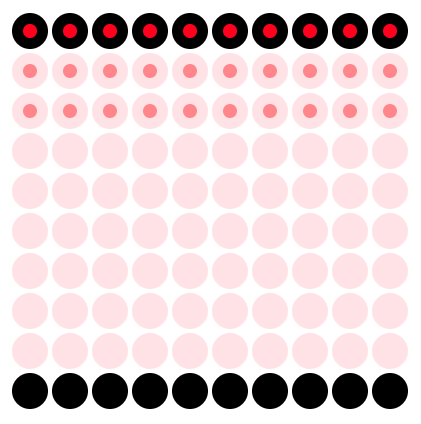
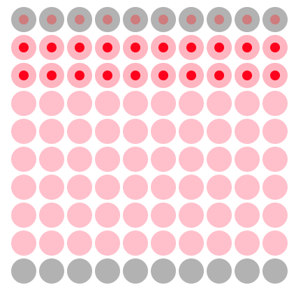
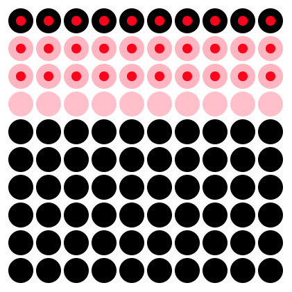

viewof plot = html`
<svg class="image" xmlns="http://www.w3.org/2000/svg" width="${
(44 * 10) + 44
}" height="${
40 * Math.ceil((44 + 44 + 44) / 10)
}">
${[
full_grid.slice(0, red).map((pt) => circle(pt[0], pt[1], "red", "red")),
full_grid
.slice(red, red + blue)
.map((pt) => circle(pt[0], pt[1], "blue", "blue")),
full_grid
.slice(red + blue, red + blue + green)
.map((pt) => circle(pt[0], pt[1], "green", "green"))
].join("")}
</svg>`Lecture 11: Introduction to probability
Reasoning about probability and common pitfalls
A good understanding of probability is important not only for understanding science but also for understanding and making sense of the world. Unfortunately, probability is poorly understood and, as a result, people tend to reason quite poorly about probabilities. Some of this faulty reasoning can have real world impacts. Therefore, it’s important that you understand probability correctly, so that you don’t also fall for these fallacies.
We’ll start off this lecture by asking a seemingly simple question.
Different views of probability
What do we mean by “probability”?
It might seem like there’s an easy answer to this question, but there’s at least three senses of probability.
These different senses after often employed in different contexts, because they make more sense in some contexts and not others
The three I’ll cover are:
The classical view of probability
The frequency view of probability
The subjective view of probability
The classical view of probability
The classical view is often used in the context of games of chance like roulette and lotteries
We can sum it up as follows:
If we have an (exhaustive) list of events that can be produce by some (exhaustive) list of equally possible outcomes (the number of events and outcomes need not be the same), the probability of a particular event occurring is just the proportion of outcomes that produce that event.
To make it concrete we can think about flipping coins. If we flip two coins then the possible outcomes that can occur are:
Heads and then heads
Heads and then tails
Tails and then heads
Tails and then tails
If we’re interested in a particular event–for example, the event of “obtaining at least one head from two flips”—then we just count the number of outcomes that produce that event. For example, let’s take the four outcomes above and see which of them lead to at least one head.
Heads and then heads: 2 heads
Heads and then tails: 1 head
Tails and then heads: 1 head
Tails and then tails: 0 heads
Three out of four outcomes would produce the event of “at least one head”, so the probability is \(\frac{3}{4}\) or 0.75.
If you’re viewing probability like this, it’s very important to be clear about what counts as a possible outcome. For example, when you’re playing the lottery, how many outcomes are there?
Is it two? Either you pick the correct numbers or you don’t? So the probability of winning is \(\frac{1}{2}\)? Of course not! There’s 45,057,474 possible outcomes. And 1 leads to you winning, with 45,057,473 leading to you not winning!
The frequency view of probability
When you take a frequency view of probability you’re making a claim about how often, over some long period of time some event occurs. The frequency view is often the view that we take in science. The frequency view of probability is also the view of probability that we most often use in the context of sampling distribution.
Think about the following statement: There’s 95% probability that the sample mean will be less than 2 standard errors from the population mean.
What this statement means is that if you draw lots of samples from the same population then 95% of the time the sample mean will be within 2 standard errors of the population mean.
Or, for example, consider assigning a probability to the claim “drug X lowers depression”, we can’t just think of each possible outcomes that could occur when people take Drug X and then count up how many lead to lower depression and how many do not, as we would do with the classical view. Because there’s no way to make an exhaustive list of every possible outcome! So instead what we need to do is to run an experiment where we give Drug X and see whether it lowers depression. And we can repeat this many many times. After this we count up the proportion of experiments in which depression was lowered, and this is then the probability that Drug X lowers depression.
The subjective view of probability (credences)
Final view we’ll discuss is the subjective view of probability where probabilities refer to credences. To understand what this means, consider the following statements:
The Australian cricket team will lose the upcoming test series against South Africa.
There is a sense in which you can assign a probability to this. But it isn’t the classical kind—we can’t just enumerate all the possible outcomes that lead to this event. Nor is it the frequency kind—we can’t repeat the 2022/2023 cricket tour over and over and see how often Australia lose.
When we talk about probability in this context mean something like degree of belief, credence, or subjective probability. Probability in this context is the answer to the question “how sure are you that the Australian cricket team will lose the upcoming test series against South Africa?”
The viewing probabilities are credences is something that is common in our everyday thinking. For example, consider jurors that are required to make a decision about the guilt or innocence of a defendant. To make this decision jurors need to assign probabilities to the two propositions: 1) The defendant is guilty or 2) The defendant is innocent. And, in the case of criminal trials, the probability assigned to 1 must be greater than 2 by some threshold amount. 1
The classical view of probability and the frequency view of probability are, in many respects, similar to each other, at least when compared to the subjective view. But you might ask, why do these differences matter?
One reason for discussing these differences is that the frequency view is the view you’ll most commonly encounter within what’s known as Frequentist statistics.This is the kind of statistics you’ll be learning in your undergraduate courses2. The frequency view is, however, not that common in our every day thinking. As the juror example is meant to demonstrate, the credence/subjective view is more common. As a result this can lead to some confusions. Specifically, people get confused and think that the results of statistical tests tell people what they should “believe”—that is, what subjective probabilities they should assign to hypotheses. But they don’t. At least not by themselves. We can use them to help us form beliefs about hypotheses, but only with the help of some extra information that comes, for example, from scientific theories and so on.
Calculating with probability
The different views of probability have got to do with what the numbers mean, but once we have the numbers there’s no real disagreements about how we do calculations with those numbers3.
Some properties of probabilities
There are some rule that probabilities need to obey. When we attach numbers to probabilities those numbers must range from 0 to 1. We assign a probability of 0 to an event if that event is impossible (that is, it will never occur). And we assign 1 to an event if it’s guaranteed (that is, it will always occur)
These two simple rules can help us to check our calculations with probabilities. If we get a value more than 1 or a value less than 0, then something has gone wrong!
A first note about notation.
There’s lots of notation that goes along with probability theory. We’ll learn more about this notion as we go long. But for now, we’ll just start off simple.
It’s common to use P or Pr to refer to probability. To refer to the probability of some event the P is followed by brackets containing a symbol. For example, if you wanted to refer to the probability of getting Heads on a coin flip then you might right P(Heads). Or if you wanted to refer to the probability that somebody is sick then you might right P(Sick).
The addition law
The addition law states that whenever two events are mutually exclusive:
The probability that at least one them occurs is the sum of the their individual probabilities
If we flip a coin, one of two things can happen. It can land Heads, or it can land Tails. It can’t land heads and tails (this is what is meant by mutually exclusive), and one of those things must happen (it’s a list of all possible events).
What’s the probability that at least one of the those events happens? Since one of those events must happen the probability must be 1. But we can also work it out from the individual probabilities using the addition law.
\(\frac{1}{2}\) possible outcomes produce Heads—P(Heads) = 0.50
\(\frac{1}{2}\) possible outcomes produce Tails—P(Tails) = 0.50
The probabilities of at least one of Heads or Tails occurring is 0.5 + 0.5 = 1
Another note about notation
Another set of symbols that you’ll see when dealing with probability are \(\cup\) (union) and \(\cap\) (intersection).
If we have two events \(A\) and \(B\) that occur with \(P(A)\) and \(P(B)\) then the probability or either A or B occurring is \(P(A \cup B)\).
The addition law tells us that if A and B are mutually exclusive (they can’t both occur at the same time) then \(P(A \cup B) = P(A) + P(B)\).
While we use \(P(A \cup B)\) to denote A or B occurring we use \(\cap\) to denote A and B occurring. That is, the probability of A and B occurring is denoted as \(P(A \cap B)\). If A and B are mutually exclusive then \(P(A \cap B) = 0\).
You can explore mutually exclusive events in Explorable 1.
Mutually and non mutually exclusive events
When we flip a coin the two outcomes are mutually exclusive. That is, they can’t both happen at the same time. But not everything is like this. Consider drawing a card from a deck of cards:
What is the probability of pulling out a Spade ♠ or a Club ♣?
What is the probability of pulling out a Spade ♠ or an Ace 🃁?
In situation (1) the events are mutually exclusive (or disjoint). A card can’t be a Spade and a Club. It will either be a Spade, a Club, or something else. In this case, the addition law applies.
In situation (2) the events are not mutually exclusive. A card can be both a Spade and an Ace. Because a card can be both a Spade and an Ace we have to make sure that we don’t double count these cards. So we just modify the addition law so that we have Equation 1 below:
\[P(A \cup B) = P(A) + P(B) - P(A \cap B) \tag{1}\]
We can put numbers to this for the card example:
There are 52 cards in a deck of cards. Of these, 13 are s. So the probability of selecting a is \(P(\mathrm{Spade}) = \frac{13}{52}\). Exactly 4 of the 52 will be s, so the probability of selecting an is \(P(\mathrm{Ace}) = \frac{4}{52}\). And finally, exactly 1 card is both an and a . So the probability of selecting a card that is both is \(P(\mathrm{Ace} \cap \mathrm{Spade}) = \frac{1}{52}\). With all these we can now work out the probability of selecting a card that is an Ace or a Spade.
\(P(\mathrm{Ace} \cup \mathrm{Spade}) = P(\mathrm{Ace}) + P(\mathrm{Spade}) - P(\mathrm{Ace} \cap \mathrm{Spade})\)
\(P(\mathrm{Ace} \cup \mathrm{Spade}) = 0.08 + 0.25 - 0.02\)
You can explore non-mutually exclusive events in Explorable 2.
Two or more events
In the previous example we were only making one selection, but the things we were selecting from had two features: The circles had a colour and they could have a dot (or not). But sometimes we want to deal with two or more selections. A simple example of this is when we flip coins multiple times. For example, if we flip a coin three times, we might want to work out the probability of getting, for example, Heads, then Tails, and then Heads again.
When we have a problem like this, we can’t just add up the probabilities. If we did, then we’d get \(\frac{1}{2}\) + \(\frac{1}{2}\) + \(\frac{1}{2}\) = \(\frac{3}{2}\). But, remember, probabilities have to be between 0 and 1, so obviously this answer is wrong.
Before we get to how to work it out mathematically, we’ll just work it out by counting. In Figure 1, we can see the possible sequences of events if we flip a coin a particular number of times. Set the slider to 3 to see what happens if we flip the coin 3 times. In Figure 1 the black circles mean getting Heads, and the white circles mean getting Tails. Now just count up how many sequences go Black, White, Black. And now count up how many sequences there are in total. And that’s the probability of getting Heads, Tails, Heads in three coin flips.
If you don’t want to count, and you just want to work it out mathematically, then you can do this by just multiplying together the probability for each of the event. Doing this gives us the following: \(\frac{1}{2}\) × \(\frac{1}{2}\) × \(\frac{1}{2}\) = \(\frac{1}{8}\).
Independence and non-independence
The coin flipping example, the three flips are independent. Independent means that, for example, the probability of getting Heads/Tails on the second flip doesn’t change depending on what you get on the first flip. This means that if I were to ask you to work out the probability of getting heads on the second flip you answer wouldn’t change if I told you what I got on the first flip.
But it is often the case the finding out a bit of information does change your probability calculation. To see how, let’s change things up a bit. Let’s say that we’re going to roll a dice. But instead of just rolling a dice, we’ll first select one of two dice. The set up is as follows: First, pick either a 20-sided dice (D-20) or a 6-sided dice (D-6). Second, roll the dice.
Unlike the coin flip example, where knowing what happened on the first flip won’t change how you calculate the probability for the second flip, knowing whether I picked a D-6 or D-20 will change your calculations. For example, the probability of rolling a 20 will depend on which dice I pick in the first step. If I told you that I picked a D-6, then the probability that I rolled a 20 would be 0, because it would be impossible! If told you that I picked a D-20, then the probability that I rolled a 20 would be \(\frac{1}{20}\).
In a situation like this, we say that the probability of rolling a 20 is conditional on the selection in the first step.
Conditional probability notation.
We deal with probability of one event that is conditional on other event, then we call this a conditional probability. There is a special notation for this. Using the dice roll example above, we’d use \(P(\mathrm{Roll\ 20})\) to refer to the probability of rolling a 20. And we’d use \(P(\mathrm{Pick\ 6-sided})\) to refer to the probability of selecting the 6-sided dice.
If wanted to refer to the probability of rolling a 20 given that (conditional on) we selected a 6-sided dice then we’d use the following notation:
\[P(\mathrm{Roll\ 20}|\mathrm{Pick\ 6-sided})\]
The \(|\) is read as “conditional on” or “given that”.
Working with conditional probabilities
We often encounter conditional probabilities in every day life. However, reasoning about conditional probabilities can be difficult and as a result people make a lot of mistakes when dealing with them.
The most common mistake that you’ll encounter is the confusion being P(A|B) and P(B|A). Or, as in the dice example, P(Roll 20 | Pick 20-sided) and P(Pick 20-sided | Roll 20). We know from above that P(Roll 20 | Pick 20-sided) is \(\frac{1}{20}\). But what is the probability of P(Pick 20-sided | Roll 20). In our scenario, where we could either of rolled a D-20 or a D-6, then given the fact that we rolled a 20, it must have been the D-20 that we rolled. So P(Pick 20-sided | Roll 20) must be 1!
The other typical confusion is confusing the condition probabilities P(A|B) and P(B|A) for the unconditional probabilities P(A) and P(B). To see this problem with this, consider the following statement:
What is the probability that a randomly selected person lives in London?
There’s about 9 Billion people in the world and only 9 Million of them live in London. So the probability is pretty low at only 0.1%. But now consider this statement:
What is the probability that a randomly selected person lives in London given that the person’s names is King Charles III?
The answer to this is obviously 1, because King Charles III lives in London. So, conditional on the randomly selected person being King Charles III then that person must live in London.
In the first statement we’re working out P(Lives in London) and in the second we’re working P(Lives in London | Is King Charles). We could also work out P(Is King Charles | Lives in London). There’s 9 Million people in London but only 1 of them is King Charles. So the probably for this is very small at less than 0.0001%!
There’s a mathematical formula that relates P(A|B) to P(B|A). This formula is known as Bayes theorem and it’s incredibly useful for helping us work out the probability of something once we’ve been given a new bit of information.
Bayes theorem
The classic example that is usually used to introduce Bayes theorem is a problem like the following:
There is a test for an illness. The test has the following properties.
About 80% of people that actually have the illness will test positive.
Only about ~5% of people that don’t have the illness will test positive
Somebody, who may be sick or healthy, takes the test and tests positive. Is that person actually sick?
Before we get to Bayes theorem remember that we can work out probabilities just by counting. So we’ll first try to get an answer to our question that way before we do the maths. We can explore this question in Explorable 3 below.
Although worked out the answer to our question just by counting the dots, we can also use Bayes theorem to do it. Bayes theorem is given as the Equation 2, below:
\[P(A|B) = \frac{P(B|A) \times P(A)}{P(B)} \tag{2}\]
Instead of using As and Bs, we’ll make it a little more readable by using ✅ to indicate that the person tested positive and 🤮 to indicate that the person is actually sick. It now looks like Equation 3.
\[P(🤮\ |\ ✅) = \frac{P(✅\ |\ 🤮) \times P(🤮)}{P(✅)} \tag{3}\]
\(P(✅\ |\ 🤮)\) is the probability that a sick person tests positive. \(P(🤮)\) is the incidence of the illness (whether is it common or rare). And \(P(✅)\) is the probability of testing positive irrespective of whether you’re sick or healthy. I didn’t tell you this number, but you can work it out using the equation in Equation 4.
\[P(✅) = P(✅\ |\ 🤮) × P(🤮) + P(✅\ |\ 😁) × P(😁) \tag{4}\]
Where 😁 means that the person is healthy.
Now we can put numbers to it. In the case where the disease was rare we had the following values:
- P(😁) = 95/100 (95% of people are healthy)
- P(🤮) = 5/100 (5% of people are sick)
- P(✅ | 😁) = 5/95 (5.26% of healthy people test positive)
- P(✅ | 🤮) = 4/5 (80% of sick people test positive)
Now we can put those numbers together to work out the value we wanted to know— that is, P(🤮 | ✅).
You can work it out yourself, and if you do then you’ll get 44.44% just as we did above.
We can also do it for the case where the disease is common. Then we can the following values.
- P(😁) = 20/100 (20% of people are healthy)
- P(🤮) = 80/100 (80% of people are sick)
- P(✅ | 😁) = 1/20 (5% of healthy people test positive)
- P(✅ | 🤮) = 64/80 (80% of sick people test positive)
Now we can put those numbers together to work out the value we wanted to know— that is, P(🤮 | ✅). If you do then you’ll get 98.46% just as we did above.
Reasoning about conditional probabilities can be difficult because people often forget about the P(🤮) part. But if we ignore it can be any to make mistakes, as we saw in the example above. But these kinds of mistakes are common and they can have dangerous consequences. I could a number of examples to show this, but I’ll just pick three.
Errors in reasoning about conditional probabilities
You might have the following statistic in the media/online.
50% of people that die from Covid have been vaccinated
I’ve seen this figure on social media along with the claim that it shows that the Covid vaccine doesn’t work. Let’s assume that the statistic is accurate. Does this mean that the vaccine doesn’t work?
First, we have to think about what this figure refers to and whether it is what we want to know. If it’s not, then we have to work out what it is that we do what to know.
First, what is this figure? To get this number we’re looking only at the people that have died. It’s a probability conditional on the person dying. That means this figure refers to P(Vaccinated | Death). But if we want to know if the vaccine works, then what we actually want to know is, if the person is vaccinated, then what is the probability that they will die. That is, we want to know the probability conditional on them being vaccinated, or P(Death | Vaccinated).
So straight away, we know that this 50% probability is not actually the number we want to know. But more importantly, this 50% is perfectly consistent with an effective vaccine if the vaccination rate is high. If the vaccine is effective, but the vaccination rate is low, this this number would be lower. So the 50% doesn’t give us the information we need to make the judgement about whether the vaccine is effective. We’d also need to know the vaccinate rate and the probability of dying if you contract Covid irrespective of your vaccine status.
The next example concerns a policy that has been proposed in the USA. Essentially the policy states that welfare recipients should be drug tests, and their benefits removed if the test comes back positive. But does a positive test mean that the person is actually a drug user? The answer to this question all depends on the rates of drug use among welfare recipients. It turns out that this is actually rather low. So let’s put some numbers to it.
First, we’ll set the properties of the test. We’ll say it’s fairly accurate, so the probability of testing positive given drug use, or P(✅|💉), will be high.
And we’ll say that it’s not that common for somebody to test positive if they’re not a drug user. So we can set P(✅|😇) to a low number.
Finally, because drug use is not common amongst welfare receipts we’ll set P(💉) to a low number.
With all this information we can work out the number we want to know. That is, P(💉|✅). We’ll use Bayes theorem as follows:
\[P(💉|✅) = \frac{P(✅|💉) × P(💉)}{P(✅)}\]
But since I haven’t given you P(✅), we’ll just work it out as follows:
\[P(✅|💉) × P(💉) + P(✅|😇) × (1 - P(💉))\]
Or with numbers:
And now the full formula:
The final argument concerns a (now retracted) paper that was published a few years ago. According to the study, there was no racial bias in police shooting. What was the evidence for this claim? The researchers looked at a large sample of police shooting and showed that in this sample of police shootings a higher proportion of victims were White than Black.
This was picked by by the conservative media (e.g., Fox news) to show that organisations like BLM were fighting against a problem that didn’t exist. But is the reasoning correct, and do the data actually show what the authors claim?
As you’ve probably guessed the results certainly don’t support the claim. But why not?
First, let’s look at the data the authors present. I’ll simply it somewhat, so that it’s easier for use to do the calculations, but the general gist is the same. In Figure 2 we can see the data they present. These are all the victors of the police shootings. The probability that a person is White (P(White|Shot)) is \(\frac{20}{30}\) or 66.67% and the probability that a person is Black (P(Black|Shot)) is \(\frac{10}{30}\) or 33.33%. These are the two probabilities that the authors looked at. You’ll notice that they’re actually two conditional probabilities. But are they the correct ones?

Let’s add some additional data. In Figure 3 we can see all the people that have encounters with the police, but not get shot. Black people are a racial minority in the USA, so we would expect police to encounter police less often on their day-to-day rounds.

Now let’s put it all together. In Figure 4 we’ve just combined the data from Figure 2 and Figure 3. This shows all the people that come into contact with police including those people that fall victim to a police shoot (red dot) and those that do not (no dot)

With everything on a single plot we can now focus in on the numbers we actually want to know. We want to know, given a person is a particular race what is the probability of them being a victim of a police shooting. That is, we want to know P(Shot | White) and P(Shot | Black), not P(White | Shot) and P(Black | Shot) as reported in the study.
To this, we’ll just focus on people who are Black. We can see this in Figure 5. This allows us to see P(Shot|Black), which gives \(\frac{10}{20}\) or 50%.

Next, we’ll just focus on the people who are White. We can see this in Figure 6. This allows use to see P(Shot|White), which gives \(\frac{20}{80}\) or 25%.

Because P(Shot | Black) is higher than P(Shot | White) then this suggests that there is in fact racial bias in police shooting. However, to reach this conclusion I had to make an assumption that wasn’t reported in the paper. I had to assume that people come across more White people than Black people in their daily activities. This is reasonable given that Black people are a racial minority. But it might not actually be true. It might be the case that police encounter Black people more often. For example, the real data might look like Figure 7. Comparing the first example, which gave P(Shot|Black) = 0.5 and P(Shot|White) = 0.25 this new data gives P(Shot|Black) = 0.14 and P(Shot|White) = 0.67. So this is consistent with a racial bias against White people.

The point here isn’t to argue whether there is or isn’t a racial bias in police shooting. Rather the point is that the data presented in this study is consistent with both conclusions. And because the authors reasoning was faulty they didn’t collect the data they needed to actually answer the question they posed.
What makes matter worse is that this study was used to delegitimise protest movements against what is a very real problem. It had very real negative consequences. This study has now been retracted, but not before it did a lot of damage.
I hope this serves as a sobering message for just how important research methods (including probability theory) is in your training. You might one day be in the position to make policies for governments so I hope you don’t fall victim to faulty reasoning when you do!
Footnotes
In criminal trials the threshold is termed “beyond reasonable doubt”. In civil trials, the probability of one must just be greater than the probability of the other, and there is no requirement that the probability of one exceeds the probability of the other by some threshold amount.↩︎
An alternative to Frequentist statistics is an approach known as Bayesian statistics. You won’t learn Bayesian statistics in your undergraduate courses (at least not in very much detail), but if you are interested in learning more then I do teach a course on it at Masters level, which you’ll be able to take in a few years time.↩︎
Probabilities don’t always have to have numbers attached. There is a sense in which something can be more probable than something else without numbers being attached.↩︎